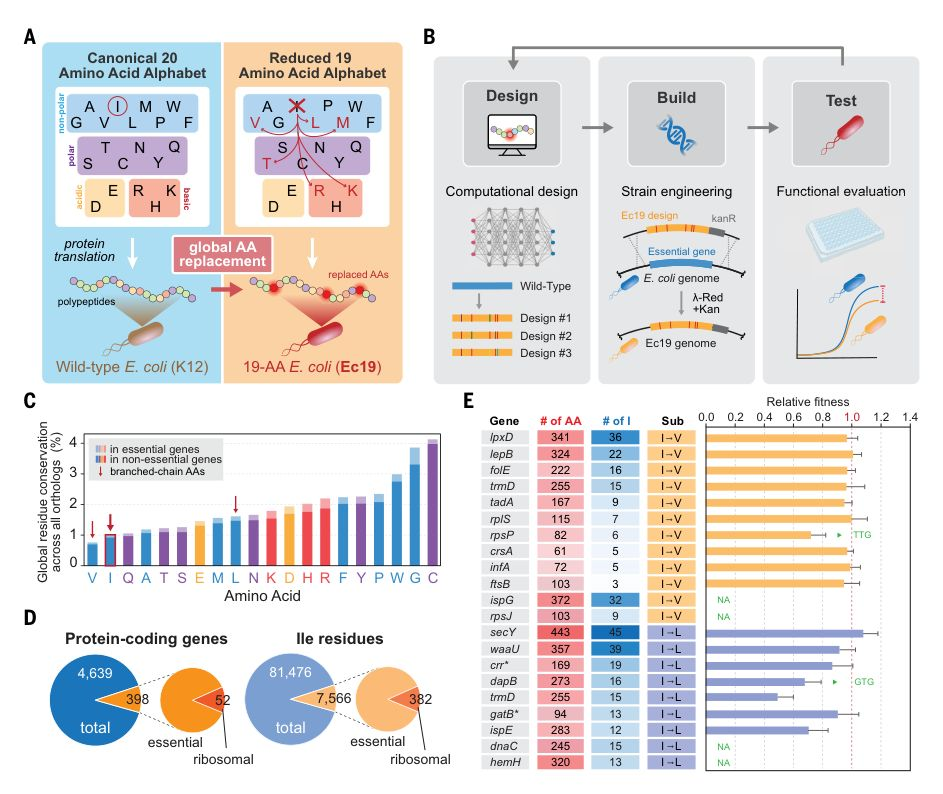
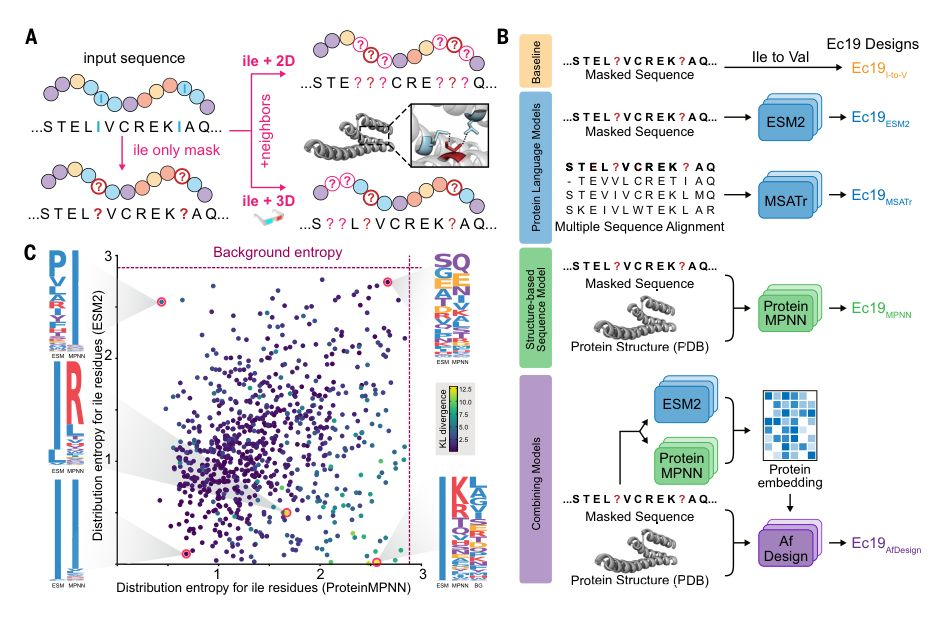
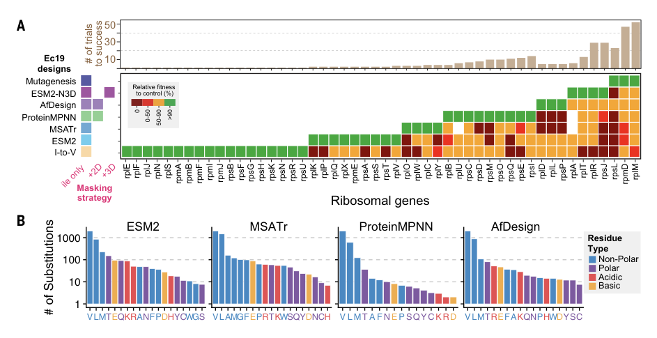
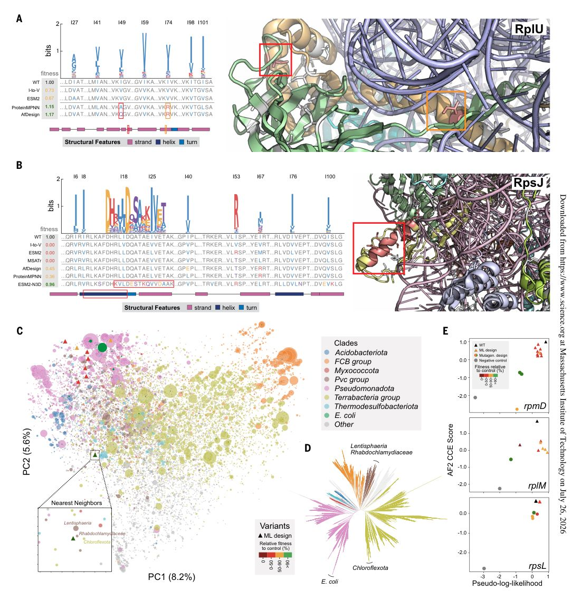
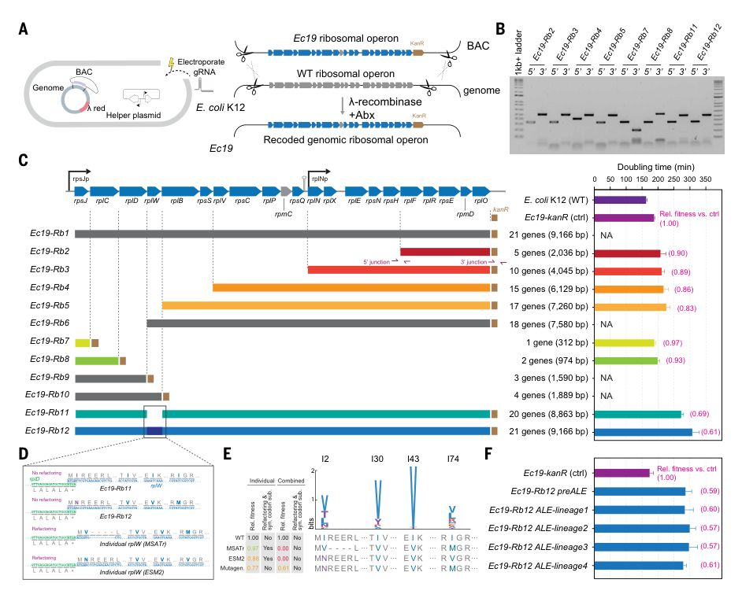

Toward life with a 19-amino acid alphabet through generative artificial intelligence design
Abstract
Because all known living organisms are made from at least 20 canonical amino acids, the feasibility of life using a more simplified alphabet remains unclear. In this work, we leveraged computational design and synthetic biology to explore building a cell from a 19–amino acid alphabet. Initial analyses suggested that isoleucine (Ile) may be dispensable, which we confirmed by directly replacing Ile residues in essential proteins in Escherichia coli . Critically, protein language models and structure-based models were necessary to redesign functional Ile-less proteins in most cases. We systematically replaced all 382 Ile residues from the ribosome and combined 21 redesigned subunits at a native genomic locus to produce a viable, evolutionarily stable cell. This work provides a roadmap to create the first 19–amino acid organism since early evolution.
Introduction
Of the roughly 500 amino acids found in nature, 20 canonical amino acids (cAAs) are used as the core building blocks of all proteins in living organisms. Posttranslational modifications to these standard amino acids, such as phosphorylation and glycosylation, further broaden their biochemical functionality within cells (1). In some rare cases, bacteria have naturally expanded their alphabet with a 21st amino acid, selenocysteine (2), and a 22nd amino acid, pyrrolysine (3). Technologies have been developed to further expand the genetic code through the incorporation of noncanonical amino acids into proteins (4). However, despite the vast metagenomic sequencing efforts of the past decades (5), no self-replicating life has ever been found to have a simpler amino acid alphabet, making the 20 cAAs truly universal to modern life. By contrast, cells that preceded the last universal common ancestor (LUCA) must have relied on a more limited set of amino acids before coevolution and eventual fixation of the standard amino acid biosynthetic pathways and the genetic code (6). Accordingly, we pose a simple question: Can a cell be made from an alphabet with fewer than 20 amino acids, and how do we make such a cell? Through synthetic biology, creation of a free-living organism from a more minimal set of biochemical building blocks can deepen our understanding of the design rules of life and assist bottom-up efforts to engineer synthetic cells with new properties.
Multiple lines of evidence suggest the feasibility of life with a more restricted amino acid alphabet. Several groups of amino acids have a high degree of biochemical similarity and potential functional redundancy, such as branched-chain amino acids (BCAAs) with overlapping hydrophobic and steric profiles (7). Computational protein structure modeling suggests that only 9 to 12 amino acids are needed to construct nearly all protein folds (8), and complementary experimental efforts have evaluated whether such constraints can yield active enzymes (9). Most frequent single-nucleotide mutations result in biochemically similar residue sub-stitutions, which are less likely to cause major impact to protein function. Codon reassignments in mitochondria and archaea also indicate a plasticity in the genetic code (10) and a general tolerance for amino acid misincorporation. In fact, a typical translational error rate of ~10 -4 by the ribosome leads to ~8% of cellular proteins containing at least one misincorporated residue (11). Prior studies on the chronology of amino acid capture have argued that G, A, V, D, E, P, S, L, and T arose earlier and R, N, K, Q, I, C, H, F, M, Y, and W evolved later on the basis of various factors, such as primordial biogenesis, thermostability, and aminoacyl-tRNA synthetase involvement (12). Notably, some ancient proteins (e.g., cytochromes) often use a limited set of amino acids (13), which hints at a simpler genetic code in early evolution.
Creating life with alternative genetic codes has long been a focus for synthetic biology. Various genome-scale editing and de novo synthesis studies have explored the removal and reassignments of codons in viruses, bacteria, and eukaryotes (14)(15)(16). These efforts have concentrated on synonymous mutations (17)(18)(19) but not on protein coding changes, which are more challenging to model and generate owing to their impact on cellular function. Studies have also attempted to recode individual non-essential proteins (20) but not large, essential cellular machinery such as the ribosome or at a genome level. Advances in high-throughput DNA synthesis, editing, and assembly have improved our capability to build designer cells through an iterative design-buildtest (DBT) framework (21).
Recent breakthroughs in computational protein modeling have unlocked unprecedented possibilities for in silico protein design, creating a digital framework to explore life's fundamental architecture (22). Biological foundational models have revolutionized protein structure prediction [e.g., AlphaFold2 (23) and RoseTTAFold All-Atom (24)], protein sequence modeling [e.g., ESM3 (25), MSA Transformer (26), and ProGen3 (27)], and structure-aware sequence generation [e.g., ProteinMPNN (28), AfDesign (29), and BindCraft (30)]. Genomic language models, such as Evo2 (31) and gLM2 (32), enable de novo generation of nucleotide sequences and the infilling of specific genomic gaps. Although these models have been successful at many design tasks (33), whether they can produce functional designs under a reduced amino acid alphabet constraint is still an open question because the models never encountered such restricted sequences during training.
In this work, we combined generative modeling and synthetic biology to explore the systematic elimination of a cAA, isoleucine (Ile, I), from the amino acid alphabet of the model bacterium Escherichia coli (Fig. 1A). We leverage protein language models (pLMs) and structure-based predictors to guide computational recoding of essential genes, including all 50 Ile-containing essential ribosomal genes. Experimental validation in E. coli confirmed that these recoded protein designs were functional and maintained >90% fitness compared with the wild-type (WT) proteins. Combining Ile-less ribosomal subunits together in a native operon produced a viable cell, thereby demonstrating a key step in alphabet reduction in a free-living cell. This work establishes an artificial intelligence (AI)-guided framework to design and build life that challenges the lower bounds of simplicity in its amino acid building blocks.

Results
Identification of a candidate dispensable cAA
To determine which of the 20 cAAs could be globally replaced in the cell, we first computationally analyzed feasible replacement strategies based on evolutionary sequence conservation and pLMs. We reasoned that cAAs with the lowest overall sequence conservation across all protein orthologs are more dispensable because highly conserved residues tend to be more functionally important and less easily substituted with another amino acid. E. coli K-12 was chosen as the model cell because it is the best-studied bacterium, with a genome that has been previously recoded and synthesized de novo (15). We called this effort "Ec19"-a synthetically engineered E. coli that uses only a 19-amino acid alphabet.
For each cAA, we first calculated a global conservation score from a multiple sequence alignment (MSA) of each E. coli K-12 protein and its orthologs (Fig. 1C and Materials and methods). Cysteine (Cys, C), glycine (Gly, G), and tryptophan (Trp, W) were the most conserved, in line with the expectation that these residues often serve crucial and highly conserved protein functions: Cys forms disulfide bonds, Gly provides structural flexibility, and Trp offers both hydrophobicity and hydrogen bonding potential. By contrast, Ile, valine (Val, V), and glutamine (Gln, Q) are the least conserved cAAs. BCAAs Ile and Val share a high degree of biochemical similarity and typically reside in buried hydrophobic cores of proteins, away from active sites of enzymes (fig. S1A). Using the ESM2 pLM (34) or MSA on 398 E. coli essential proteins, we then generated all pairwise replacements of one cAA for another to produce a BLOSUM-like substitution matrix (fig. S1B, table S1, and Materials and methods). Ile-to-Val (I-to-V) emerged as the most frequently tolerated substitution observed across evolution. The ESM2-based substitution matrix was well correlated with the MSA matrix (Pearson correlation coefficient r = 0.92; fig. S1C), which indicates that the ESM2 model generally captures features also present in the MSA, although there are some deviations suggesting distinctive aspects of ESM2 embeddings.
Among the BCAAs, Ile is also more costly to biosynthesize compared with Val (~32.3 versus ~23.3 phosphates per amino acid) (35), which means that I-to-V sub-stitutions may also provide energetic savings for the cell (fig. S1D). Moreover, Ile auxotrophy can result from deletion of ilvA (encoding a threonine deaminase) without causing Val auxotrophy, whereas no Val biosynthetic genes can be deleted without also causing Ile auxotrophy. Finally, E. coli mutants deficient in isoleucyl-tRNA synthetase (IleRS) proofreading can tolerate Val or norvaline sub-stitutions in Ile positions at rates of up to 15%, resulting in "statistical proteins" that can still sustain cellular viability, which suggests the possibility of proteome-wide Ile replacement (36). Global Ile sub-stitutions in the E. coli genome would involve >81,000 sites, with >7500 in essential proteins (Fig. 1D). Together, these results suggest that Ile is a promising candidate amino acid for global removal in Ec19 and that substituting Ile with Val might be tolerated at a large scale across its proteome. in essential genes in non-essential genes E 0 C Gene # of AA # of I Sub Relative fitness 0.0 0.2 0.4 0.6 1.0 1.2 1.4 0.8 ispE 283 12 gatB* 94 13 trmD 255 15 dapB 273 16 GTG crr* 169 19 waaU 357 39 secY 443 45 ftsB 103 3 infA 72 5 crsA 61 5 82 6 rpsP TTG rplS 115 7 tadA 167 9 trmD 255 15 folE 222 16 lepB 324 22 I V lpxD 341 36 ispG 372 32 NA rpsJ 103 9 NA dnaC 245 15 NA hemH 320 13 I L NA 4,639 52 398 81,476 382 7,566 D Protein-coding genes Ile residues total total essential essential ribosomal ribosomal A B R H K E D S N T Q C Y V A G P I L M F W R H K E D S N T Q C Y V A G P I L M F W global AA replacement 19-AA E. coli (Ec19) Wild-type E. coli (K12) Canonical 20 Amino Acid Alphabet Reduced 19 Amino Acid Alphabet protein translation polypeptides replaced AAs non-polar polar acidic basic Functional evaluation Test Computational design Design Design #1 Wild-Type Design #2 Design #3
Testing systematic Ile replacement in essential proteins
To explore the feasibility of global Ile removal in E. coli, we first redesigned 36 representative essential genes and three highly expressed genes by systematically substituting all Ile residues with either Val or leucine (Leu, L) (table S2). These recoded essential genes were synthesized de novo and introduced, along with a cotranslated antibiotic selectable marker (kanR), into E. coli cells to replace or inactivate the WT essential genes at their native genomic loci through λ-Red homologous recombination (fig. S2 and Materials and methods). Any functional impact of the redesigned proteins (I-to-V or I-to-L) would reduce cellular fitness, which is measured on the basis of growth rate compared with that of their controls cells (KanR only). Each successfully generated I-to-V or I-to-L variant was sequence verified to confirm the presence of the recoded gene at its native locus. Of the 39 genes tested, 17 designs tolerated complete I-to-V or I-to-L replacements (Fig. 1E and table S3). For example, all 36 I-to-V sub-stitutions in LpxD, an essential N-acyltransferase in lipid biosynthesis, were well tolerated. In SecY, an inner membrane protein essential for protein translocation, all 45 Ile residues could be replaced with Leu. These mutations represent >10% of all residues in their respective proteins. Most successfully recoded I-to-V variants (9 of 10) showed no fitness change relative to WT cells, whereas more of the I-to-L variants (four of seven) exhibited notably slower growth than WT, indicating reduced functionality compared with I-to-V designs. In a direct comparison, recoding TrmD (an essential tRNA methyltransferase) using I-to-V caused no detectable fitness loss, whereas I-to-L substitution substantially reduced cell fitness (to 0.50) relative to control. Of the 22 remaining designs that we could not generate, 16 produced no viable colonies and six yielded only partially recombined mutants of various configurations (fig. S3). These results demonstrate the potential for global Ile replacement across a number of essential E. coli proteins but also highlight that a simple substitution scheme is insufficient for more than half of the genes tested.
Protein redesign using sequence and structure-guided deep learning models
Recent advances in deep learning models for proteins have transformed our ability to understand and design sequences, structures, and function (23,37,38). We hypothesized that these deep learning methods can capture intra-and interresidue interactions to generate more diverse and functionally viable Ec19ΔI designs in cases where simple sub-stitutions, such as I-to-V or I-to-L, fail. Given the distinctive characteristics of different models and approaches, we chose to apply multiple models and use coupled modeling strategies that combined the strengths of different models (Fig. 2, A and B).

pLMs can learn self-conditional probabilities P(sequence) by training on large protein databases (39, 40), and evolutionarily linked variations can be further captured with MSA Transformer (MSATr), which uses related sequences to model conditional probabilities P(sequence | MSA) (41). With pretrained pLMs, specifically ESM2 and MSATr, we can computationally generate Ec19ΔI designs by masking Ile residues and then sampling alternative residues at these positions to maximize sequence pseudolikelihoods (Fig. 2A). One strategy is to select the non-Ile residues with the highest probability assigned by the pLM at all masked positions simultaneously (fig. S4). Alternatively, Ile replacement can be performed autoregressively, decoding one residue at a time, from the beginning of the sequence to the end. This stepwise decoding allows the pLM to iteratively adjust the probability distributions for the remaining masked residues at each step. Notably, compared with ESM2, MSATr incorporates additional evolutionary information from the MSA of the target gene's orthologs across the entire bacterial kingdom. Beyond the target Ile residues, neighboring compensatory mutations can also be designed to account for two-dimensional (2D) steric interactions of adjacent residues (i.e., "sequence neighbors") as well as 3D interactions of distal residues that are spatially near the target Ile (i.e., "structural neighbors") (Fig. 2A).
In addition to evolutionary insights, models incorporating structural information-such as ProteinMPNN (28), which evaluates P(sequence | structure), and AlphaFold (23), which models P(structure | sequence)provide complementary biophysical and structural context beyond pLMs (Fig. 2B). By incorporating structural information, ProteinMPNN accounts for the 3D conformations and interprotein interactions required to maintain proper protein folding and functionality. ProteinMPNN candidate sequences can be further screened using AlphaFold2 and ESM2, leveraging AlphaFold's learned energy function to rank structures despite its typical reliance on MSA information for accurate prediction (42). As an alternative approach, we also explored an extension of AfDesign, a method based on backpropagation through AlphaFold2 to find sequences matching a target experimental structure. Our extension uses ProteinMPNN or ESM2 output to guide sequence optimization on a per-residue level to find sequences that satisfy both models (Fig. 2B, fig. S5, and Materials and methods).
To evaluate the differences in Ile replacement predictions from evolutionary and structure-based models, we performed a comparative analysis of Ec19ΔI designs for 50 essential protein sequences generated by ESM2 and ProteinMPNN (Fig. 2C). Specifically, we assessed the differences in the amino acid distributions at each position by calculating the Kullback-Leibler (KL) divergence between the probability distributions predicted by the models, which quantifies how their substitution preferences diverged. We found that although the models occasionally agreed on certain sub-stitutions, they often proposed different amino acids at the same Ile target positions, which indicates that ProteinMPNN and ESM2 explore distinct regions of the sequence space. Notably, neither model produced Ec19ΔI designs closely resembling the background sequences, suggesting that both approaches generate novel solutions rather than replicate protein variants already present in nature.
Iterative design and evaluation of an Ile-less E. coli ribosome
The ribosome is one of life's most important molecular machines, responsible for translating nucleic acid information into proteins. Before fixation of the modern genetic code and the biosynthetic capture of all 20 cAAs in the LUCA, functional ribosomes made from simpler amino acid alphabets (<20 amino acids) must have existed in ancient protocells (43). As a major step toward fully recoding an E. coli genome with a reduced amino acid alphabet, we set out to demonstrate that the E. coli ribosome can be recoded to operate with only 19 cAAs.
The E. coli ribosome is the largest protein complex in the cell, comprising 52 essential protein subunits and three ribosomal RNAs (rRNAs). Across all essential ribosomal proteins, 382 Ile residues are present, averaging nine per subunit (Fig. 1D and fig. S6). Of the 52 subunits in E. coli K-12, only two, RpmC and RpmH, contain no Ile. To assess whether other Ile-less ribosomal proteins occur in nature, we surveyed amino acid frequencies across 52 ribosomal genes in 5624 complete bacterial genomes from the Ensembl Bacterial Database (44) (fig. S7, A and B). Although natural Ile-less variants were rare, we identified some instances in 16 of 52 ribosomal proteins. Comparison of these natural Ile-less sequences with our designed variants revealed no close sequence matches (maximum pairwise identity, 91.5%), which indicates that the Ec19ΔI designs occupy regions of sequence space not represented among extant natural variants.
We further tested whether these natural Ile-less ribosomal subunits were functional. Sixteen variants across six different ribosomal proteins were chosen to replace the E. coli WT subunits: RplJ (n = 3 variants), RplR (n = 4), RpmA (n = 1), RpmD (n = 6), RpsI (n = 1), and RpsQ (n = 1). However, most of these variants failed to produce any viable clones (table S2). Only the RpmA and RpsQ variants were recovered, but they suffered from significant growth defects (21 and 27% of WT growth rate, respectively) (fig. S8). Further comparison of the amino acid frequency in ribosomal, nonribosomal essential, or all proteins showed that Ile usage was not different in the E. coli ribosome (fig. S7C). Higher lysine (Lys, K) and arginine (Arg, R) frequencies were observed in the ribosome than in other E. coli proteins, consistent with the expected interactions between these positively charged residues and negatively charged rRNA (45). These observations suggest that Ile residues are not under substantial negative evolutionary selection in the ribosome, and other reported natural Ile-less E. coli variants are nonfunctional or severely impaired.
To systematically remove all Ile residues in the ribosome, we sought to redesign each subunit individually (Fig. 2B) and tested designs in vivo using recombineering to replace the chromosomal WT locus with the corresponding ΔI variant. We minimized any undesired crossover recombination events between each ΔI variant and its WT gene by incorporating synonymous codon sub-stitutions every two to eight nucleotides across the coding region. Possible synonymous effects were assessed by generating control ribosomal genes containing only these synonymous mutations (fig. S9). After the recombineering of each ΔI design and selection with a resistance marker, each mutant was sequence verified, and growth rate was determined (table S4). We defined a ΔI ribosomal design as "functionally recoded" if its fitness was within 10% of the control cell (fitness > 0.9, where 1 is control), which is within the experimental resolution of our growth assays (Materials and methods).
We first tested I-to-V baseline designs, which produced fully functional ΔI replacements in 18 of 50 ribosomal genes (Fig. 3A). Of the remaining genes, 19 yielded isolates with substantial fitness defects (relative fitness < 0.9 compared with WT), and 13 showed no colonies at all. These results align with our earlier success rate of ~43% in other essential genes (Fig. 1E), confirming the feasibility of global I-to-V sub-stitutions even when functional defects occur (37 of 50). For the 32 genes with defective or failed I-to-V designs, we implemented a DBT framework to explore computational ΔI designs using deep learning models (ESM2, MSATr, ProteinMPNN, and AfDesign) (Materials and methods). Approximately five designs per gene were tested for each model before progressing to the next model. Iterative testing with these ΔI designs produced additional functional ribosomal solutions: nine genes with ESM2, five with MSATr, eight with ProteinMPNN, and three with AfDesign (Fig. 3A).

To understand the types of Ile sub-stitutions favored by each model, we examined their rank-ordered distributions (Fig. 3B). Whereas evolutionary models (MSATr and ESM2) generally selected polar and BCAAs as Ile substitutes, structure-guided models (ProteinMPNN and AfDesign) frequently favored biochemically distant amino acids, especially Arg, at a much higher rate. This difference suggests that nonevolutionary models may leverage distinctive biochemical mechanisms and design principles that evolutionary processes have not explored in these proteins. Together, these results indicate that although deep learning models predict I-to-V and I-to-L as the most likely sub-stitutions for Ec19ΔI designs, less-obvious residues, such as methionine (Met, M), threonine (Thr, T), alanine (Ala, A), Arg, and Lys, can also be selected depending on the evolutionary or structural information incorporated by each model.
To solve the remaining most challenging genes, we explored compensatory mutations using enhanced pLMs that incorporate structural insights by allowing mutations at amino acid positions near Ile residues in the 3D structure. We call this design category "N3D." Structural neighbor positions were identified by screening amino acids within a 3-to 7-Å radius of Ile residues in the crystal structure of the WT ribosomal protein, which were then added to the set of masked positions for pLMs. This range was selected to predominantly capture structural neighbors while minimizing inclusion of sequence neighbors (e.g., <3 Å). Allowing mutations beyond 7 Å typically led to an excessive number of masked positions, causing pLMs to generate long, repetitive sequences unlikely to be functional. Within this distance window, we prioritized designs for experimental validation by ranking them using AlphaFold2 (fig. S5). This approach resolved four additional ribosomal genes, demonstrating that integrating evolutionary and biophysical constraints enables solutions unattainable by single-modality models.
Interpreting Ec19ΔI ribosomal designs from pLMs and structural models
inter-pretability of large generative models is a challenging, unsolved problem (46). Given the near-WT performance of our computationally designed ΔI ribosomal proteins, we sought to investigate the underlying mechanisms driving their success. Several cases demonstrated how our methods were able to generate complex and nonintuitive solutions to difficult Ec19ΔI designs (e.g., not a simple I-to-V substitution). For example, although a simple I-to-V substitution yielded a nonfunctional variant in RpsT (30S protein S20), ESM2 predicted histidine as the optimal replacement at the first Ile position (I4) (fig. S10A). Moreover, evolutionary and structure-guided models generated functional designs that differed substantially from each other. In RpmE, for instance, both ESM2 and ProteinMPNN produced variants with fitnesses comparable to that of WT (fig. S10B). These differences and unintuitive observations prompted us to explore the rationales behind residue selection by different models.
Structure-aware models can leverage powerful structural priors to suggest amino acid sub-stitutions rarely observed in nature. In the case of RplU (50S ribosomal subunit protein L21), the most fit variants were generated by structural models, namely ProteinMPNN ranked with AlphaFold and AfDesign with ProteinMPNN bias (Fig. 4A). At the I49 position, these models selected Q and A as substitutes, which were observed in only 1 and 0.5% of natural RplU homologs, respectively. Moreover, both models selected R at the I74 position, an extremely rare occurrence only observed in three natural protein sequences identified in the MSA, each sharing <30% sequence identity with the WT RplU. Because ESM2 tends to cluster sequences with >40% identity (47), this likely explains why R was not favored at I74 by ESM2. Subsequent analysis of mutational probabilities using ESM2 and ProteinMPNN (table S5) showed that the predicted probability of I74R was 0.001 based on sequence alone, increased to 0.2 with additional structural information, and reached 0.4 when neighboring-chain context was further incorporated. This result suggests that the I74 position is subject to specific structural and interchain constraints. Previously, inversefolding models (e.g., ProteinMPNN) were observed to favor more stable proteins (48), implying that R may represent one of the few viable options for maintaining stability at this position. Although these sub-stitutions occur on the protein surface rather than within its hydrophobic core, they exhibited limited flexibility in amino acid choice, as evident in the low substitution rate at these positions. This observation also implies that the specific substitution to R likely contributes to stability. This design highlights the advantage of using models that leverage structural priors and interchain context to propose solutions underexplored by evolution.

More difficult proteins require expanding the design space beyond sub-stitutions at Ile positions alone. For instance, the ESM2-N3D model, which allows changes within 4 to 5 Å of Ile positions, generated a functional RplT (50S protein L20) carrying an Ala 12 →Arg (A12R) mutation two positions away from I9 (fig. S10C). This mutation structurally interacts with a residue one α helix turn from the I9 position, potentially compensating for the I9V substitution. Notably, A12R is highly prevalent among RplT homologs, which suggests an evolutionarily conserved functional role. These findings indicate that 3D masking models can effectively identify compensatory mutations that stabilize Ile mutations.
For the challenging RpsJ 30S-S10 subunit, the ESM2-N3D model masking neighbors within 3 to 6 Å of Ile residues generated complex designs. The functional variant extensively remodeled the α helix spanning between ribosomal subunits by introducing eight non-Ile mutations within this helix alongside two Ile sub-stitutions (Fig. 4B). Comparison A AfDesign ESM2-N3D ProteinMPNN MSATr ESM2 I-to-V il e o n ly + 2 D + 3 D Ribosomal genes Mutagenesis Ec19 designs Masking strategy 10 30 50 # of trials to success >90 50-90 0-50 0 Relative fitness to control (%) rplE rplF rplJ rplN rplS rpmA rpmB rpmF rpmI rpmJ rpsB rpsF rpsG rpsH rpsK rpsN rpsR rpsU rplK rplP rplQ rplX rpmE rpsA rpsS rpsT rplV rplO rplW rplC rplY rplB rplU rpsC rpsD rpsM rpsO rpsQ rpsE rpsI rplD rplL rpsP rplA rplT rplR rpsJ rpsL rpmD rplM B VLAMGFEPRTKWSQYDNCH # of sub-stitutions MSATr 1 10 100 1000 VLMTEQKRANFPDHYCWGS ESM2 V LM T A F N E P SQY C K RD ProteinMPNN V LMTREFAKQNPHWDYSC AfDesign Non-Polar Polar Acidic Basic Residue Type Fig. 3. Systematic replacement of all Ile residues in the ribosome. (A) Summary results of ∆I recoding of 50 E. coli ribosomal subunits using different Ec19∆I designs. Heatmap shows the best results from different designs, with color indicating fitness relative to WT, ranging from 0% (dark red), 0.1 to 50% (red), 50 to 90% (orange), to >90% (green). The top bar chart shows the number of designs tested to identify a functional ΔI subunit. (B) Rank-ordered frequency distribution of replacement amino acid selection across all functional Ec19∆I designs by four models. Substitution counts are normalized across models to account for differences in total sub-stitutions generated. of the redesigned helix with natural protein sequences revealed that even the closest homologs differed by at least five sub-stitutions, indicating that this solution was novel throughout evolution. To further investigate its evolutionary context, we analyzed corresponding regions from RpsJ homologs across bacterial taxa and performed principal components analysis (PCA) of their sequence features. In this PCA space, the ΔI-redesigned helix most closely resembled sequences from Lentisphaeria, Rhabdochlamydiaceae, and Chloroflexota, bacterial phyla that are evolutionarily distant from E. coli (Fig. 4, C and D). These results suggest that pLMs can apply structural and functional constraints from evolutionarily distant sequences to generate novel functional variants. Despite testing 20 to 30 variants for each of the three remaining ribosomal genes (rpsL, rpmD, and rplM) across different models and computational design paradigms, no fully functional ΔI designs were identified, although some variants were viable but with fitness defects. We therefore applied NNS mutagenesis by multiplex automated genome engineering (MAGE) (49) to systematically explore all possible sub-stitutions at Ile positions, yielding functional variants (Fig. 3A). These included Ile sub-stitutions to Gly, Gln, Trp, and phenylalanine (Phe, F)-changes that defied conventional protein design logic and were predicted to be largely unfavorable by structural and evolutionary models (Fig. 4E). Together, our combined approaches resulted in the complete removal of all Ile residues from each of the 50 proteins composing the E. coli ribosome while preserving near-WT function.
Combining Ec19ΔI ribosomal subunits across operons
Many proteins operate within heteromeric protein complexes that rely on defined protein-protein interactions to assemble and fulfill their roles within the cell. Therefore, we sought to evaluate whether Ec19ΔI variants could function in combination and to uncover potential epistatic interactions between designs. Although most ribosomal genes are scattered across the E. coli genome, which makes experimental testing of all designs together challenging, the 30S ribosomal subunit is encoded within a contiguous 10-kb region comprising 21 genes (rpsJ-rplCDWB-rpsS-rplV-rpsC-rplP-rpmC-rpsQ and rplNXE-rpsNH-rplFR-rpsE-rpmD-rplO) across two adjacent operons (fig. S11 and table S6). This genomic organization presents an opportunity to combine a substantial number of Ec19ΔI designs together. RpmC was kept as WT because it did not contain Ile. We sought to replace this entire region with our top-performing Ec19ΔI designs, removing previously introduced synonymous mutations to avoid confounding effects. The redesigned operon was synthesized de novo, cloned into a selectable bacterial artificial chromosome (BAC), and integrated into its native genomic locus using replicon excision enhanced recombination (REXER) (50) (Fig. 5A). However, genomic integration of this cassette (Rb1) yielded no viable colonies (Fig. 5B), suggesting incompatibility among recoded variants.

To assess whether disrupted interprotein interactions might explain the failure to generate the Rb1 strain, we used the genomic language model gLM2 to predict all pairwise amino acid contacts within the WT and the fully recoded Rb1 regions. Specifically, we applied the categorical Jacobian method (47), which measures how systematically mutating each amino acid in the sequence to every other possible amino acid alters the pLM's outputs (Materials and methods). Correlation analysis of predicted interaction strengths between residue pairs in the WT and recoded operon revealed that both intra-and interprotein contacts were largely preserved (ρ = 0.92, P < 2.2 × 10 -16 ) (fig. S12). These results suggest that, despite being designed independently, the recoded ribosomal subunits are structurally compatible and unlikely to fail due to disrupted interprotein contacts.
To experimentally identify the point of failure within the ΔI ribosomal operon, we constructed a series of strains (Rb2 to Rb6) encoding progressively larger portions of the recoded ribosomal operon, starting from the 3′ end. All constructs were confirmed by nanopore sequencing (Fig. 5C). Strains Rb2 and Rb3, which included part or all of the rplN-rplO region, exhibited near-WT fitness (relative fitness ≥ 0.9) with up to 10 recoded genes. Extending the recoding to rplV in Rb4 (15 genes) and rplB in Rb5 (17 genes) also yielded viable strains, though with slight growth defects (fitnesses of 0.86 and 0.83, respectively). Although Rb5 exhibited slower growth compared with the WT control, its cumulative fitness loss translated to an average individual fitness loss of only 1 to 2% across each of the 17 recoded subunits (fig. S13), demonstrating that these designs function well even when combined. However, we were unable to generate any viable clones for Rb6 (18 genes), which differed from Rb5 by the addition of a single gene, rplW, which implicates this region as a failure point (Fig. 5C).
To continue building the recoded operon, we restarted from the 5′ end, generating strains Rb7 (rpsJ) and Rb8 (rpsJ-rplC). These produced viable colonies with fitnesses of 0.97 and 0.93, respectively. However, extending these constructs to include rplD alone (Rb9) or both rplD and rplW (Rb10) failed to yield any viable clones. The lack of viable clones for Rb9 might be attributed to the insertion of the KanR gene at the 3′ end of rplD, potentially leading to reduced cellular fitness. We then constructed Rb11, a near-complete operon in which all genes except rplW were recoded. This 20-gene construct produced a viable strain with a fitness of 0.69, confirming that rplW was the primary obstacle to fully recoding this ribosomal operon.
To identify the cause of failure in rplW, we experimentally verified our top-performing individual ΔI rplW design from MSATr. Although this design was viable on its own, resequencing revealed several deletions at residue positions 3 to 6, immediately after the first recoded Ile (Fig. 5D and table S4). Although these deletions may have indicated flexibility in the local sequence, we were unable to integrate the MSATr design into the recoded operon. We therefore turned to our secondbest ∆I rplW design from ESM2, which exhibited a fitness of 0.88 (just below our viability threshold of 0.9) and did not contain any further deletions (Fig. 5D and table S4). However, this design also failed to support growth when combined with the full set of 20 recoded genes.
These negative results led us to suspect that the underlying sequence architecture of the rplD-rplW region might cause the failure of the combined ΔI designs. Indeed, the rplD-rplW junction features a noncanonical 4-base pair (bp) overlap between the stop codon of rplD and the second-position Ile codon of rplW. In the individual ΔI designs for rplD and rplW, we had refactored this overlap by duplicating the shared sequence to separate the two genes, thereby preserving both the ribosome binding site and the required rplD stop codon and rplW start codon (Fig. 5D). This general refactoring strategy has been used successfully in previous recoding efforts (15). Although these designs produced functional ΔI rplD and rplW mutants when tested individually (Fig. 3A), they failed to combine with the other ΔI designs (Rb6, Rb9, and Rb10), which suggests that the refactored architecture may not be tolerated in the context of the full operon.
We therefore sought to identify other viable ∆I designs that preserved the native overlapping architecture of the rplD-rplW region. To markedly reduce the sequence search space, we used a modelguided mutagenesis strategy by analyzing our generative model designs to identify consensus sub-stitutions at all Ile positions in RplW (Fig. 5D). At position I2, only T or N sub-stitutions maintained the overlapping rplD stop codon. At positions I30 and I43, all models consistently favored an I-to-V substitution. Position I74 showed greater variability, with the models collectively suggesting eight alternative residues. We then synthesized and tested all 16 possible combinations of these sub-stitutions and ultimately recovered a fully recoded ribosomal operon (Rb12) containing a functional ∆I rplW variant, Ec19_ ID183. A comparative analysis of the Ec19_ID183 variant in Rb12 with the ESM2 design revealed a single positional difference-a M substitution at position I74 (Fig. 5E). The Rb12 strain exhibited reasonable viability, with a relative fitness of 0.61 in M9 minimal medium compared with the Ec19-kanR control strain (Fig. 5C and fig. S14). This 21-gene ribosomal operon marks the first set of engineered ribosomal subunits constructed entirely from a 19-amino acid alphabet.
Notably, the rplW variant Ec19_ID183 identified through modelguided mutagenesis was nonviable when tested individually in the refactored genome used for individual variant screening. By contrast, the same variant exhibited a fitness of 0.77 when tested in a nonrefactored genomic context preserving the native overlap with rplD. This suggests that the rplW-rplD overlap imposes an inherent constraint, likely mediating an important but uncharacterized regulatory function required for viability. This overlap architecture is highly conserved across distant bacterial phyla (fig. S15), suggesting an evolutionary preserved feature in this operonic arrangement.
Finally, we assessed the evolutionary stability of the Ec19ΔI Rb12 strain using continuous adaptive laboratory evolution (ALE) in lysogeny broth (LB) media over 450 generations. Across four independent lineages, pre-and post-ALE populations showed no significant differences in growth rate (P > 0.05, Student's t test) (Fig. 5F and fig. S16), indicating a degree of evolutionary stability. Whole-population genomic sequencing at generations 0, 150, 300, and 450 revealed 21 to 29 acquired mutations per lineage. Critically, no mutations were detected within the recoded 21-gene ribosomal operon, and no Ile codon revertants were observed over the course of evolution. Moreover, no other easily accessible compensatory mutations emerged that could have improved the reduced fitness of the engineering mutant (fig. S17). As expected under long-term laboratory selection, mutations enriched over the course of evolution affected genes involved in metabolism, niche adaptation, and structural integrity (table S7). These mutations, often associated with changes in growth, DNA repair, or cell division, reflect classical signatures of adaptive evolution in E. coli under laboratory conditions (51) and further support the genetic stability of the ΔI Rb12 genome.
Discussion
The ability to form a self-replicating cell using a defined amino acid vocabulary is a crucial step in the origin and early evolution of life. This work attempts to explore life that uses a simpler amino acid alphabet with synthetic biology. Computational analysis using evolutionary sequence conservation and pLMs suggested that Ile is one of the least conserved amino acids across the model E. coli bacterial proteome and could be substituted with other amino acids. Initial experimental studies on E. coli essential genes showed that a simple replacement strategy (e.g., I-to-V) was successful in only 40% of cases. Approaches based on evolutionary and structure-guided generative models were then applied to successfully redesign a ΔI ribosome in which subunits were individually characterized and combined at a native genomic region containing 21 essential genes. Our success in building all ΔI ribosomal genes, which together form a structurally complex essential macromolecule containing both proteins and catalytic rRNAs, suggests that Ile reassignment in other proteins in the cell is likely feasible. Although there is still speculation regarding which amino acids were most recently fixed in the LUCA (12), our study suggests that the modern-day amino acid alphabet code could be reduced. Our efforts represent the largest targeted sequence changes applied to the ribosome (6.5%) or any protein in the bacterial cell to date while introducing nontrivial alterations. In several instances, our methods identified multiple equally viable ΔI solutions, highlighting different possible paths that could be evolutionarily explored. When multiple ΔI ribosomal subunits were combined, we observed a detectable although not entirely surprising cumulative growth decrease, which represents only a modest per-variant fitness deficit of <1.8% in minimal media. Continuous laboratory evolution did not yield adaptive mutations (including reversions to Ile ) in the redesigned ribosomal regions that would improve fitness of the Rb12 strain after 450 generations, which indicates the evolutionary stability of the ΔI ribosomal operon.
Generative models can reduce the sequence search space from near-infinite possibilities to a few high-confidence testable designs, including compensatory mutations that would be challenging to test using traditional combinatorial mutagenesis approaches, such as MAGE. Nevertheless, mutagenesis methods can serve as a fallback strategy for failed designs in cases that are still experimentally tractable (e.g., limited combinatorial scale ). We showed that in silico design was crucial to functionally recode ribosomal genes where simple I-to-V sub-stitutions were insufficient (60% of cases) and required relatively few trials per gene (median of four attempts). The generative models were challenged with a novel constraint: recovering protein function under the restriction of a 19-amino acid vocabulary. Although no single model emerged as universally superior, the constellation of models tested ultimately produced diverse solutions arising from the emphasis of different features, such as structural stability or evolutionary conservation. Evolutionary sequence -based models were effective for proteins with strong conservation signals but failed to identify solutions for several structurally constrained targets. By contrast, using structural information for generative models was essential for identifying viable sub-stitutions that required coordinated compensatory mutations, particularly at protein-protein interfaces or buried positions.
Synonymous codon choice may also affect cellular fitness by altering translation kinetics, mRNA stability, and transcription, which remain a challenge for genome-scale recoding efforts (15). Future efforts using DNAlevel models [e.g., DNA language models (52)] that account for codon usage and noncoding sequences can potentially disentangle fitness defects due to residue changes, codon usage, or genomic context. These DNA models could also be helpful in rare but consequential edge cases, such as the presence of overlapping genes that we encountered in this study.
Large-scale gene library synthesis and high-throughput characterizations (53) could further improve parallel assessment of computationally designed variants. Complementary efforts through tRNA engineering and codon reassignment (4) could further accelerate alphabet reduction efforts through directed evolution and functional genomic analysis. Better deep learning models with improved zero or few-shot predictions could allow for direct testing of 10-to 100-kb-scale designs without the need for iterative individual validations (54). Ultimately, synthetic cells with a reduced amino acid alphabet test the limits of the minimal biochemical components needed to build life, unlocking unexplored properties and biotechnological potential.
Materials and methods
Strains and plasmids
The host strain was EcNR1, a derivative of E. coli K-12 MG1655 constructed to contain a modified λ prophage within the bioA-bioB intergenic region. For routine cloning, NEB Turbo competent E. coli (NEB C2984H) was used. Bacterial cultures were grown in LB, Lennox (BD Difco 240230), under standard conditions. Liquid and solid media were supplemented with antibiotics as required: chloramphenicol (50 μ g/ml), kanamycin (30 μ g/ml), apramycin (50 μ g/ml), carbenicillin (50 μ g/ml), zeocin (25 μ g/ml), and gentamicin (20 μ g/ml). Solid media were prepared by adding 2 % (w/v) Bacto agar (Thermo Fisher Scientific 443572500) to LB. The pCas9-Ara plasmid was engineered to express Cas9 under an arabinose-inducible promoter. It was assembled via Gibson Assembly, incorporating the Cas9 open reading frame (ORF), the plasmid backbone and origin of replication from pCas (Addgene no. 42876), and the araC gene with the pAra promoter derived from plasmid pKD46. The pBAC series plasmids for REXER were constructed by inserting Ec19 fragments, each containing ~ 100-bp homology regions and distinct target sequences at both termini, into the pBeloBAC11 vector (Addgene no. 60342). The pTarget-2gRNA plasmid, designed for constitutive expression of single guide RNA (sgRNA), was constructed by annealing complementary oligonucleotides (10 μ M) containing the 20-bp target sequence with appropriate overhangs (table S8). Following standard protocols, annealed oligonucleotides were integrated into the pTarget- 2gRNA backbone via Golden Gate assembly. This ligation and digestion were performed using T4 DNA ligase (NEB M0202S) and BsaI-HFv2 (NEB R3733S) with 1X T4 DNA ligase buffer.
DNA synthesis and generation of gene targeting cassettes
All DNA oligonucleotides (table S8) were purchased with standard purification and desalting from Integrated DNA Technologies. Individual Ec19 DNA variants with synonymous codon changes were synthesized by Integrated DNA Technologies and Twist Biosciences. Before assembly, all synthetic DNA fragments were amplified by polymerase chain reaction (PCR) and subsequently purified.
PCR reactions were prepared in 30 μl volumes using the Q5 Hot Start High-Fidelity 2X Master Mix (NEB M0492S). Each reaction contained 15 μl of the master mix, 1 μl of diluted synthetic template (1 ng/μl), 2 μl of forward and reverse primer mix (10 μM each), and 12 μl of nuclease-free water. Thermocycling conditions consisted of an initial denaturation step at 98°C for 1 min, followed by 25 to 30 cycles of denaturation at 98°C for 10 s, annealing at 65°C for 15 s, and extension at 72°C for 1 to 5 min. After amplification, 1 μl of each PCR product was analyzed by electrophoresis on a 1% agarose gel to confirm amplification efficiency and product size. Successful reactions were purified using a 2% E-Gel system, and DNA fragments were extracted from the gel matrix using the Monarch Spin DNA Gel Extraction Kit (NEB T1020) according to the manufacturer's protocol. Purified DNA was eluted in nuclease-free water and stored at -20°C for downstream applications.
Construction of gene targeting cassettes was performed first by PCR amplification of a kanamycin resistance (KanR) cassette using primers designed to introduce ~50 bp of homology flanking the 3′ end of the target gene and ~20 bp of overlap with the 3′ end of Ec19 DNA variants. For assembly, individual gene targeting constructs, consisting of the Ec19 DNA fragment and the KanR cassette, were combined using the NEBuilder HiFi DNA Assembly Kit (NEB E2621S) according to the manufacturer's instructions. After assembly, constructs were PCR amplified using primers listed in table S8. PCR products were purified using Cytiva Sera-Mag SpeedBeads (Cytiva 65152105050250), eluted in nuclease-free water, and analyzed by 1% agarose gel electrophoresis to confirm size and purity. Only constructs displaying the expected size and purity were selected for downstream recombination experiments.
Genomic replacement of single genes and ribosomal operon
Individual gene replacement with the Ec19 design was achieved in the E. coli genome using the λ-Red recombineering in the presence of gene targeting constructs, each consisting of the desired Ec19 designs fused to a kanamycin resistance cassette. Recombination was performed in EcNR1 as previously described (49). Briefly, EcNR1 cultures were grown at 30°C to mid-log phase [optical density at 600 nm (OD 600 ) = 0.4 to 0.6] and induced for λ-Red expression by incubation at 42°C for 15 min. Cells were then washed twice with cold dH 2 O and resuspended in 50 μl of dH 2 O containing 10 ng/μl of the respective gene targeting construct. Electroporation was performed using either a Bio-Rad GenePulser (0.1 cm cuvette, 1.78 kV, 200 ohms, 25 μF) or an ECM 399 Electroporation System with high-throughput plates (0.2 cm gap size). For ECM 399, peak voltage was maintained at or above 1200 V, and the time constant was kept within 4 to 6 ms. After electroporation, cells were recovered in 3 ml of SOC medium at 30°C with shaking for 3 hours. Recombinant clones were selected on LB-agar supplemented with kanamycin (50 μg/ml), restreaked for monoclonality, and grown in 96-well plates containing 200 μl of LB with 50 μg/ml kanamycin for subsequent genetic analysis.
For the ribosomal gene cluster pathway replacement experiment, two distinct 20-bp targeting sequences (table S8), not present in the E. coli genome, were incorporated into two desired genomic loci via homologous recombination. Gentamicin resistance gene aacC2 and Zeocin resistance gene Sh ble constructs were PCR amplified to generate linear dsDNA fragments for recombination in EcNR1. Primers were designed to incorporate ~50 bp of homology flanking the 5′ and 3′ ends of the target locus. A series of host strains (e.g., host strain for Ec19-Rb1) for the pathway were generated after selection on gentamicin (20 μg/ml) and Zeocin (25 μg/ml), fitness assays, and Sanger sequencing to confirm precise genomic integration. The host strain EcNR1, harboring two integrated 20-bp targeting sequences, was first transformed with the helper plasmid pCas9_Ara, followed by trans-formation with pBAC plasmids. Cas9 expression was induced at OD 600 = 0.2 by adding 1% (w/v) L-arabinose and incubating the culture for 1.5 hours at 30°C with shaking (200 rpm). Upon reaching an OD 600 of ~0.4, the λ-Red recombination system was heat-induced by transferring the culture to a 42°C shaking water bath (200 rpm) for 15 min. Cultures were immediately cooled on ice after heat induction. Induced cell cultures (1 ml) were washed twice with 1 ml of ice-cold dH 2 O and resuspended in 50 μl of dH 2 O. Cells transformed with the pTarget-2gRNA plasmid were recovered in 1 ml SOC medium for 1 hour at 30°C with shaking (200 rpm). The recovered cells were then inoculated into 100 ml of LB supplemented with the relevant antibiotic(s) in a 250 ml flask and grown overnight (16 to 18 hours) at 30°C with shaking (200 rpm) for outgrowth. Serial dilutions of the culture were plated on LB agar containing the appropriate antibiotic(s) to select for successful editing events through PCR amplification and Sanger sequencing.
ALE
To investigate the fitness impact of individual and subpathway Ec19 variants, continuous growth experiments were conducted in an eVOLVER turbidostat system (55). Turbidostat cultures were maintained within an OD 600 range of 0.2 to 0.4 in LB medium supplemented with appropriate antibiotics and 0.05% Tween-20 to inhibit biofilm formation. Cultures were grown at 30°C with a stir rate of eight. 1 ml samples were collected every 24 hours for subsequent analysis. The number of generations experienced by each culture at a given time point was calculated based on the turbidostat growth record. To identify adaptive mutations, whole-genome sequencing was performed on samples collected at each time point using the whole genome sequencing pipeline following the manufacturer's instructions.
Fitness measurements
Bacterial fitness, defined as the maximum specific growth rate (μ max ) during exponential phase, was assessed through kinetic growth analysis. Bacterial cultures were grown in 200 μl of LB medium supplemented with 50 μg/ml kanamycin in flat-bottom 96-well plates at 30°C. Kinetic growth was monitored on a Biotek Synergy H1 Microplate reader with orbital shaking at 300 rpm. The maximum specific growth rate (μ max ) was derived from the maximum slope of ln(OD 600 ) versus time, determined by linear regression applied to a sliding window of five consecutive time points. Doubling times (t d ) were calculated using the formula t d = Δt × ln(2)/μ max , where Δt represents the time interval between measurements (10 min). The relative fitness refers to the ratio of the fitness of the Ec19∆I design to either (i) a strain with a KanR gene positioned immediately downstream and cotranscribed with the target gene or (ii) a strain containing a KanR gene and only synonymous mutations in the target gene's coding sequence.
Next-generation sequencing (NGS) data processing and variant calling
Nanopore FASTQ sequencing reads were aligned to the reference genome (E. coli K-12 MG1655) using minimap2 v2.24-r1122 (56) with parameters optimized for ONT reads. The resulting alignments were sorted and indexed using samtools v1.16.1 (57) to produce coordinatesorted BAM files for downstream analysis. Single-nucleotide polymorphisms (SNPs) and small insertions/deletions (indels) were identified using Clair3 (v1.0.11) (58), a deep learning-based variant caller designed for long-read sequencing. We used both full-alignment and pileup modes to generate high-confidence variant calls. The output consisted of per-sample VCF files containing predicted variants and associated quality metrics.
To complement variant calling, we performed a base-level pileup analysis from the BAM files. For each genomic position, we computed the depth of each base (A, T, C, G), ambiguous bases (N), and gaps (representing deletions) using a custom script built on top of pysam v0.21.0. This resulted in a position-by-base matrix of counts, denoted as where b ∈ {A, T , C, G, N, [gap]}, and the total depth at position i is
From this, we derived the nonreference allele fraction at each position i, defined as where ref is the reference base at position i.
To assess sample-specific deviations from the control, we computed the difference in nonreference allele fraction between each sample and the control at each position For each sample s, we identified loci with substantial divergence from the control by selecting positions where exceeded the 99.99th percentile (0.175) of all |ΔR| values across the genome. These positions were subjected to further downstream analyses. We combined insights from both Clair3-predicted variants and pileup-based base composition statistics to enhance variant confidence and inter-pretability. Positions supported by both methods were considered high-confidence variant loci.
MSA construction
We constructed MSAs for all E. coli essential genes using jackhmmer ( 59 ), retrieving gene orthologs from the OrthoDB database ( 60 ) while restricting the orthology level to bacteria. To reduce redundancy, sequences were deduplicated using Hhfilter ( 61 ) with a maximum sequence identity threshold of 90 % (-id 90) and a minimum coverage of 75 % (-cov 75). For MSATr inference, we further subsampled the MSAs to optimize memory usage and model performance. Specifically, we applied a stricter minimum coverage threshold of 90 % and retained only sequences with at least 30 % sequence identity to the query (-qid 30). We then followed the HHfilter procedure described in the MSATr framework, aiming to reduce the MSA size while maximizing sequence diversity. To achieve this, we used the hhfilter diff -m parameter, targeting a final MSA size of at least 384 sequences while maintaining as much sequence diversity as possible.
Residue conservation analysis
We quantified residue conservation by computing amino acid conservation frequencies in MSAs of E. coli essential genes. Formally, let a i denote the amino acid at position i in a target sequence. We defined a i as conserved if its relative frequency at position i in the MSA, denoted as f(a i ,i) met or exceeded a threshold of 95%, i.e., f a i , i = n(a i ,i)
where n(a i ,i) is the number of sequences in the MSA that have a i at position i, and N(i) is the total number of sequences in the MSA, including both sequences with an amino acid and those with a deletion (gap). We then computed the total number of conserved positions for each amino acid type across all E. coli essential gene sequences and normalized this by the total occurrences of that amino acid in these sequences, to correct for amino acid composition bias.
Amino acid compositional analysis of ribosomal subunits
Protein sequence data were obtained from the Ensembl Bacteria database (release 115) via the Ensembl FTP server (44). Sequences corresponding to ribosomal subunits were extracted from multifasta files using text-matching of protein annotations within FASTA header. Amino acid frequencies of all variants were analyzed using custom scripts written in R (version 4.5.1). Only subunits corresponding to genomes labeled as "complete genome" were retained for analysis.
pLM sequence pseudolikelihood
We used the pseudolikelihood score to rank designed sequences generated by pLMs. Pseudolikelihood has been proposed as an effective method to evaluate protein sequences using masked language models (62). It quantifies how well a model predicts each amino acid in a sequence given its surrounding context. In this framework, the pseudolikelihood score of a sequence is computed as the sum of the log-probabilities of each amino acid token conditioned on the rest of the sequence. Formally, for a sequence x = x 1 , x 2 , … , x L , the score is computed as the sum of the log-probabilities, also referred to as the pseudolog-likelihood, of each amino acid token conditioned on the rest of the sequence where x {i} denotes the sequence with position i masked out. Each conditional probability x {i} is obtained by iteratively masking position i and recording the probability assigned by the pLM to the original amino acid at that position.
Amino acid substitution analysis with ESM2 and MSAs
ESM2 has been shown to capture evolutionary constraints, including coevolution between residues, similarly to simpler models such as Markov Random Fields (47). We leveraged this capability to analyze amino acid substitution patterns across E. coli essential genes. At each position in a WT sequence, we recorded the difference in log-probability assigned by ESM2 between the WT amino acid and each of the other 19 possible sub-stitutions. These differences were aggregated across all positions and all essential genes. Finally, substitution scores were normalized by the frequency of each WT amino acid in the dataset. Lower scores in the resulting amino acid substitution matrix indicate evolutionary less disruptive, more likely sub-stitutions.
We performed the same analysis using MSAs of E. coli essential genes downloaded from AlphaFoldDB (63). At each position in a WT sequence, we recorded the frequency of each possible substitution and used these values to calculate differences in log-probabilities. All subsequent aggregation and normalization steps were performed as described above.
Sequence-based design with pLMs
We sampled Ile-free sequences from pLMs by defining two decoding strategies: simultaneous decoding and autoregressive decoding. In both approaches, we began by masking all Ile positions in a given WT sequence x = x 1 , x 2 , … , x L and used the model to sample alternative residues at those positions. Let M ⊂ {1, … , L} denote the set of masked positions, corresponding here to the positions originally occupied by Ile.
In the simultaneous decoding strategy, all masked positions were decoded at once by selecting at each position i ⊂ M the amino acid a * i with the highest conditional probability under the pLM where A is the amino acid vocabulary and x {M} denotes the unmasked context.
In the autoregressive decoding strategy, masked positions were decoded sequentially in a fixed order from 5′ to 3′. Decoding began with the first masked position, and the sequence was iteratively updated after each step. At decoding step t, a single masked position i t ∈ M was selected, and the amino acid a * i t was chosen as where x context(t) denotes the sequence with all previously decoded positions updated and remaining masked positions still present as mask tokens. After each step, the selected amino acid was inserted into the sequence, and the updated sequence was used as input for the next decoding step. This stepwise procedure allowed the model to refine its predictions for each subsequent residue based on the evolving sequence context.
pLM-based design with structural neighbor masking
To incorporate structural priors into pLMs, we enabled them to optionally mutate residues neighboring Ile in the Protein Data Bank (PDB) structure of the WT gene. For each gene, we generated designs with structural neighbors at varying distances from Ile, using minimum distances of 3 or 4 Å and maximum distances of 5, 6, or 7 Å. These structural neighbors were added to the set of masked positions. Designs were generated using ESM2 and MSATr for all specified distance ranges, applying both decoding strategies described above. Note that the pLM had the option to retain the original amino acid, as the original residue was not necessarily Ile. After excluding sequences with long amino acid repeats, we narrowed down the designs for experimental validation by predicting their structures with AlphaFold. We then ranked the designs using the AF2Rank composite score (42), which is derived from the model's confidence in its prediction and has been shown to correlate with structure quality.
Retrieving and processing structures for structure-aware design
For each protein, we retrieved the most suitable solved structure containing the target protein and its interacting neighbors. We queried the PDB for all entries containing the target protein and ranked them based on two criteria: the number of chains present in the structure and resolution quality. Entries missing residues in the target protein sequence were filtered out. If no suitable PDB structure was found, we retrieved the model from AlphaFoldDB.
To process structures for computational design, we retained only the target protein chain and neighboring protein chains with atoms within 5 Å of any Ile residue's atoms in the target protein. When the total number of residues exceeded 600, we selectively removed the most distant neighboring chains to ensure the resulting structure would fit within GPU memory constraints during AlphaFold2 processing.
Contact interaction analysis of the recoded ribosomal operon
We predicted the contact map between all genes in the 10-kb ribosomal region using the categorical Jacobian method (47). This procedure systematically mutates each amino acid in the sequence to every other possible amino acid and measures how these perturbations affect the language model outputs-specifically, the changes in logits. The magnitude of these changes reflects the degree of coupling between residues, with larger values suggesting a higher likelihood of interaction. We applied this method to both the WT and the fully recoded 10-kb region using the gLM2 genomic language model, which facilitates the analysis of multiple proteins within a single sequence context. We denote C as the categorical Jacobian matrix, where each entry C[i, j] captures the sensitivity of the model's output at position j to mutations at position i, providing a proxy for potential contact relationships between residues. We then calculated the Spearman correlation between the WT and the Ec19 inter-and intraprotein contacts.
AfDesign protocol with external model bias integration
Our protein design method builds on AfDesign, which uses backpropagation through AlphaFold2 to optimize amino acid sequences that fold into target structures. Protein sequences are passed to AlphaFold2 as one-hot vectors, but this discrete representation is incompatible with gradient-based optimization methods. To enable gradient-based sequence optimization, AfDesign uses a continuous relaxation of the sequence representation that is gradually constrained to arrive at a discrete amino acid sequence. The optimization parameters consist of logits-unconstrained real numbers representing each possible amino acid at each residue position (20 × residue count parameters). These logits undergo a threestage trans-formation process to generate the final sequence (fig. S5, top left): Stage 1 interpolates between direct logits and their softmax trans-formation ("soft" representation). The direct logits allow unconstrained optimization as they can take any real value, and the softmax trans-formation produces a probability distribution over amino acids at each position (values between 0 and 1 that sum to 1). This interpolation enables the optimization to gradually transition from an unconstrained to a constrained space. Stage 2 gradually decreases the softmax temperature from 1.0 to 0.01. As the temperature decreases, the probability distribution becomes increasingly concentrated on the highest-scoring amino acid at each position, producing sharper distributions while maintaining differentiability. Stage 3 uses discrete one-hot encoding based on argmax of the soft representation, producing a single amino acid choice per position as required for standard protein sequence representation. However, gradients are still computed through the soft representation, allowing final refinements to the sequence while maintaining discrete outputs.
We extended this base protocol in two key ways. First, we incorporate amino acid preferences from ProteinMPNN or ESM2 as bias terms in the optimization process. This is achieved by adding scaled logits from the chosen model (ProteinMPNN or ESM2) to the optimization parameters before the softmax operation (fig. S5, lower left) where bias temp controls how strictly the optimization adheres to the biasing model's preferred sequence space. Lower bias temperatures constrain the search more tightly to this space, whereas higher temperatures allow more exploration.
Second, we use template-based structural constraints to guide the optimization process. The AfDesign protocol typically operates in single-sequence mode because AlphaFold2 becomes insensitive to individual mutations when provided with MSAs. However, this creates a substantial challenge: AlphaFold2 generally cannot accurately predict the structure of complex proteins, particularly those with multiple interacting chains, without MSA information.
We address this limitation by building on previous work (42), which has demonstrated that AlphaFold2 learns an approximation of an energy function capable of ranking structures for a given sequence or sequences for a given structure. Although their work focused on ranking structural decoys for a sequence, we adapt this approach to optimize sequences that match a target structure. By assigning a single chain identifier to all protein chains in the complex, the template distogram incorporates distances between neighboring chains (fig. S5, right). This modification is particularly necessary for designing ribosomal proteins, where the structural stability largely depends on protein-RNA contacts rather than protein-protein interactions.
Thus, the optimization objective uses cross-entropy loss between the predicted distogram (Q) and the template distogram (P)
where P represents the target distances from the template structure, and Q represents the distances predicted by AlphaFold2 for the current sequence.
We ran the design process for every gene several times, going through seeds 0 and 1 bias temperatures {0.5, 0.1, 0.05, 0.02}, both with and without primary sequence neighbors. Then for every bias temperature, we selected the best design according to the composite loss of AlphaFold-Multimer (64) models to avoid ranking designs with the same model used for optimization. The implementation of the method is available at https://colab.research.google.com/github/sokrypton/ ColabDesign/blob/v1.1.0/mpnn/examples/afdesign_and_proteinmpnn_ bias.ipynb.
Structure-aware design with ProteinMPNN selected based on Pareto front
Because ProteinMPNN can be used to generate a lot of designs quickly, we generated 50 designs for each of the combinations including and not including primary sequence neighbors and two temperature settings, 0.1 and 0.5, totaling 200 generations with ProteinMPNN. In all generations, sequences of neighboring protein chains were fixed, as were all residues of the designed chain except Ile and potentially primary sequence neighbors.
To select which designs to test experimentally, we ranked all designs using two complementary criteria. (i) Structural screening: We used AlphaFold2 in single-sequence template mode, calculating the composite score introduced in (42). This score quantifies how well each design maintains the target structure. (ii) pLM screening: We used the ESM2 650M language model to calculate pseudo-log-likelihood scores by sequentially masking each residue position and computing the probability assigned to the correct amino acid.
Instead of assigning weights to combine the ranks, we identified designs on the Pareto front-those not outperformed by any other design on both metrics simultaneously. For experimental testing, we sampled four candidates from this frontier. If fewer than four designs were on the frontier, we included all, removed them from the dataset, recalculated the frontier, and repeated until four designs were selected.
References
- C. T. Walsh, S. Garneau-Tsodikova, G. J. Gatto Jr., Protein posttranslational modifications: The chemistry of proteome diversifications. Angew. Chem. Int. Ed. 44 , 7342–7372 (2005)
- Böck A. Selenocysteine: The 21st amino acid. Mol. Microbiol 1991. doi:10.1111/j.1365-2958.1991.tb00722.x
- Srinivasan G, James C, Krzycki J. Pyrrolysine encoded by UAG in Archaea: Charging of a UAG-decoding specialized tRNA. Science 2002. doi:10.1126/science.1069588
- Liu C, Schultz P. Adding new chemistries to the genetic code. Annu. Rev. Biochem 2010. doi:10.1146/annurev.biochem.052308.105824
- Nayfach S. A genomic catalog of Earth's microbiomes. Nat. Biotechnol 2021. doi:10.1038/s41587-020-0718-6
- Koonin E, Novozhilov A. Origin and Evolution of the Universal Genetic Code. Annu. Rev. Genet 2017. doi:10.1146/annurev-genet-120116-024713
- Stephenson J, Freeland S. Unearthing the root of amino acid similarity. J. Mol. Evol 2013. doi:10.1007/s00239-013-9565-0
- Fan K, Wang W. What is the minimum number of letters required to fold a protein?. J. Mol. Biol 2003. doi:10.1016/S0022-2836(03)00324-3
- Walter K, Vamvaca K, Hilvert D. An active enzyme constructed from a 9-amino acid alphabet. J. Biol. Chem 2005. doi:10.1074/jbc.M507210200
- Knight R, Freeland S, Landweber L. Rewiring the keyboard: Evolvability of the genetic code. Nat. Rev. Genet 2001. doi:10.1038/35047500
- Mohler K, Ibba M. Translational fidelity and mistranslation in the cellular response to stress. Nat. Microbiol 2017. doi:10.1038/nmicrobiol.2017.117
- Trifonov E. Consensus temporal order of amino acids and evolution of the triplet code. Gene 2000. doi:10.1016/S0378-1119(00)00476-5
- Dickerson R. The structures of cytochrome c and the rates of molecular evolution. J. Mol. Evol 1971. doi:10.1007/BF01659392
- Smith H. Hutchison 3rd, C. Pfannkoch, J. C. Venter, Generating a synthetic genome by whole genome assembly: φX174 bacteriophage from synthetic oligonucleotides. Proc. Natl. Acad. Sci. U.S.A 2003. doi:10.1073/pnas.2237126100
- Fredens J. Total synthesis of Escherichia coli with a recoded genome. Nature 2019. doi:10.1038/s41586-019-1192-5
- Richardson S. Design of a synthetic yeast genome. Science 2017. doi:10.1126/science.aaf4557
- Lajoie M. Probing the limits of genetic recoding in essential genes. Science 2013. doi:10.1126/science.1241460
- Grome M. Engineering a genomically recoded organism with one stop codon. Nature 2025. doi:10.1038/s41586-024-08501-x
- Robertson W. Escherichia coli with a 57-codon genetic code. Science 2025. doi:10.1126/science.ady4368
- Longo L, Lee J, Blaber M. Simplified protein design biased for prebiotic amino acids yields a foldable, halophilic protein. Proc. Natl. Acad. Sci. U.S.A 2013. doi:10.1073/pnas.1219530110
- Ostrov N. Technological challenges and milestones for writing genomes. Science 2019. doi:10.1126/science.aay0339
- Chu A, Lu T, Huang P. Sparks of function by de novo protein design. Nat. Biotechnol 2024. doi:10.1038/s41587-024-02133-2
- Jumper J. Highly accurate protein structure prediction with AlphaFold. Nature 2021. doi:10.1038/s41586-021-03819-2
- Krishna R. Generalized biomolecular modeling and design with RoseTTAFold All-Atom. Science 2024. doi:10.1126/science.adl2528
- Hayes T. Simulating 500 million years of evolution with a language model. Science 2025. doi:10.1126/science.ads0018
- R. M. Rao et al. , in Proceedings of the 38th International Conference on Machine Learning , learning to 250 million protein sequences. Proc. Natl. Acad. Sci. U.S.A. 118 , e2016239118 (2021)
- Bhatnagar A. 2025. doi:10.1101/2025.04.15.649055
- Dauparas J. Robust deep learning-based protein sequence design using ProteinMPNN. Science 2022. doi:10.1126/science.add2187
- Kosugi T, Ohue M. Solubility-Aware Protein Binding Peptide Design Using AlphaFold. Biomedicines 2022. doi:10.3390/biomedicines10071626
- Pacesa M. 2025. doi:10.1101/2024.09.30.615802
- Brixi G. 2025. doi:10.1101/2025.02.18.638918
- Cornman A. 2024. doi:10.1101/2024.08.14.607850
- Yang K, Wu Z, Arnold F. Machine-learning-guided directed evolution for protein engineering. Nat. Methods 2019. doi:10.1038/s41592-019-0496-6
- Rives A. Biological structure and function emerge from scaling unsupervised learning to 250 million protein sequences. Proc. Natl. Acad. Sci. U.S.A 2021. doi:10.1073/pnas.2016239118
- Akashi H, Gojobori T. Metabolic efficiency and amino acid composition in the proteomes of Escherichia coli and Bacillus subtilis. Proc. Natl. Acad. Sci. U.S.A 2002. doi:10.1073/pnas.062526999
- Pezo V. Artificially ambiguous genetic code confers growth yield advantage. Proc. Natl. Acad. Sci. U.S.A 2004. doi:10.1073/pnas.0402893101
- Lin Z. Evolutionary-scale prediction of atomic-level protein structure with a language model. Science 2023. doi:10.1126/science.ade2574
- Senior A. Improved protein structure prediction using potentials from deep learning. Nature 2020. doi:10.1038/s41586-019-1923-7
- Elnaggar A. ProtTrans: Toward Understanding the Language of Life Through Self-Supervised Learning. IEEE Trans. Pattern Anal. Mach. Intell 2022. doi:10.1109/TPAMI.2021.3095381
- Madani A. Large language models generate functional protein sequences across diverse families. Nat. Biotechnol 2023. doi:10.1038/s41587-022-01618-2
- Sgarbossa D, Lupo U, Bitbol A. 2023. doi:10.7554/eLife.79854
- Roney J, Ovchinnikov S. State-of-the-Art Estimation of Protein Model Accuracy Using AlphaFold. Phys. Rev. Lett 2022. doi:10.1103/PhysRevLett.129.238101
- Crick F. The origin of the genetic code. J. Mol. Biol 1968. doi:10.1016/0022-2836(68)90392-6
- Yates A. Ensembl Genomes 2022: An expanding genome resource for non-vertebrates. Nucleic Acids Res 2022. doi:10.1093/nar/gkab1007
- Lott B, Wang Y, Nakazato T. A comparative study of ribosomal proteins: Linkage between amino acid distribution and ribosomal assembly. BMC Biophys 2013. doi:10.1186/2046-1682-6-13
- Vu M. Linguistically inspired roadmap for building biologically reliable protein language models. Nat. Mach. Intell 2023. doi:10.1038/s42256-023-00637-1
- Zhang Z. Protein language models learn evolutionary statistics of interacting sequence motifs. Proc. Natl. Acad. Sci. U.S.A 2024. doi:10.1073/pnas.2406285121
- Paul S, Kollasch A, Notin P, Marks D. 2023
- Wang H. Programming cells by multiplex genome engineering and accelerated evolution. Nature 2009. doi:10.1038/nature08187
- Wang K. Defining synonymous codon compression schemes by genome recoding. Nature 2016. doi:10.1038/nature20124
- Dragosits M, Mattanovich D. Adaptive laboratory evolution -Principles and applications for biotechnology. Microb. Cell Fact 2013. doi:10.1186/1475-2859-12-64
- Avsec Ž. Advancing regulatory variant effect prediction with AlphaGenome. Nature 2026. doi:10.1038/s41586-025-10014-0
- Plesa C, Sidore A, Lubock N, Zhang D, Kosuri S. Multiplexed gene synthesis in emulsions for exploring protein functional landscapes. Science 2018. doi:10.1126/science.aao5167
- Biswas S, Khimulya G, Alley E, Esvelt K, Church G. Low-N protein engineering with data-efficient deep learning. Nat. Methods 2021. doi:10.1038/s41592-021-01100-y
- Wong B, Mancuso C, Kiriakov S, Bashor C, Khalil A. Precise, automated control of conditions for high-throughput growth of yeast and bacteria with eVOLVER. Nat. Biotechnol 2018. doi:10.1038/nbt.4151
- Li H. Minimap2: Pairwise alignment for nucleotide sequences. Bioinformatics 2018. doi:10.1093/bioinformatics/bty191
- Danecek P. Twelve years of SAMtools and BCFtools. Gigascience 2021. doi:10.1093/gigascience/giab008
- Zheng Z. Symphonizing pileup and full-alignment for deep learning-based long-read variant calling. Nat. Comput. Sci 2022. doi:10.1038/s43588-022-00387-x
- Eddy S. Accelerated Profile HMM Searches. PLOS Comput. Biol 2011. doi:10.1371/journal.pcbi.1002195
- Tegenfeldt F. OrthoDB and BUSCO update: Annotation of orthologs with wider sampling of genomes. Nucleic Acids Res 2025. doi:10.1093/nar/gkae987
- Remmert M, Biegert A, Hauser A, Söding J. HHblits: Lightning-fast iterative protein sequence searching by HMM-HMM alignment. Nat. Methods 2012. doi:10.1038/nmeth.1818
- Meier J. 2021. doi:10.1101/2021.07.09.450648
- Varadi M. AlphaFold Protein Structure Database in 2024: Providing structure coverage for over 214 million protein sequences. Nucleic Acids Res 2024. doi:10.1093/nar/gkad1011
- Evans R. 2022. doi:10.1101/2021.10.04.463034
- Kozlov S, Rochereau C. 2026. doi:10.5281/zenodo.18202555
- Kozlov S, Rochereau C. 2026. doi:10.5281/zenodo.18155920